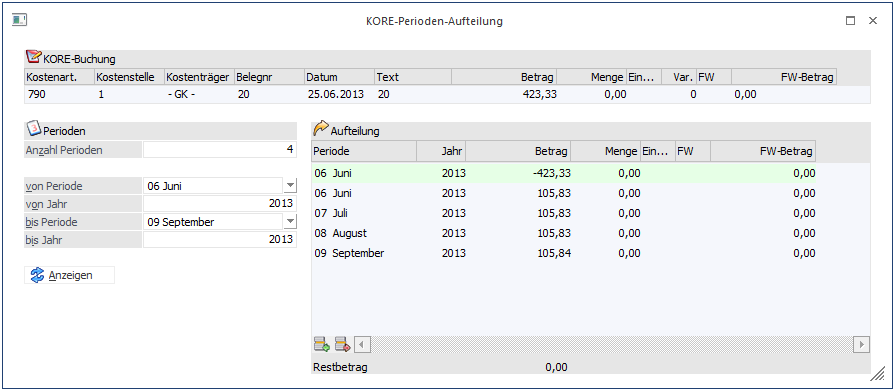
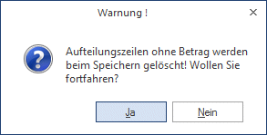
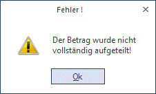

In den Buchungsfenstern
ü Dialog-Stapel-Buchen
ü Dialog-Stapel-Buchen (Quick)
ü Eingangsrechnungen buchen
ü Ausgangsrechnungen buchen
ü Zahlungsmittelkonten
ü Splitbuchung
gibt es den Button KORE aufteilen:
Button
Ø Kore aufteilen
Nach Drücken des Buttons in einer gültigen KORE-Zeile (Kostenart, Kostenstelle und Betrag wurden angegeben) wird ein neues Fenster geöffnet.

Dieses Fenster teilt sich in drei Bereiche:
ü Im Bereich KORE-Buchung sehen Sie nochmals die KORE-Daten aus dem Buchungsfenster
ü Im Bereich Perioden haben Sie die Möglichkeit, entweder die Anzahl der Perioden einzugeben oder im Bereich von Periode/Jahr-bis Periode/Jahr den Aufteilungszeitraum einzugeben. Je nach Eingabe werden die Daten in diesem Bereich automatisch aktualisiert.
ü Im Bereich Aufteilung sehen Sie die zu buchenden KORE-Zeilen. Mit dem "Anzeigen"-Button wird die Aufteilungs-Tabelle entsprechend den Perioden-Angaben neu berechnet
Diese Aufteilung kann selbstverständlich auch manuell bearbeitet werden. Werden Beträge geändert, rechnet die WinLine den aufzuteilenden Restbetrag unterhalb der Tabelle mit. Mit F3 wird im aktuellen Betragsfeld der Restbetrag zum Betrag hinzugefügt. Unterhalb der Tabelle stehen natürlich auch die Einfügen-/Entfernen-Button zur Verfügung.
Buttons
Ø OK
Mit dem OK-Button wird die Aufteilung in das Buchungsfenster übernommen, wenn sich der Restbetrag auf 0 beläuft. Aufteilungszeilen mit Betrag 0 werden nach der Abfrage

bei Eingabe von "Ja" gelöscht. Bei "Nein" kehrt das Programm ins Aufteilungsfenster zurück.
Ø Ende
Mit dem Ende-Button wird das Fenster ohne Änderung verlassen, ausgenommen wenn beim Öffnen des Fensters ein Restbetrag vorhanden war (weil im Buchungsfenster der KORE-Betrag geändert wurde), dann kann das Fenster nur verlassen werden, wenn die Aufteilung gelöscht wird. Er erscheint dazu die Meldung

Ø Vergessen
Der Button verwirft alle Auftragszeilen und stellt den ursprünglichen Zustand wieder her.
Im FIBU-Buchungsfenster informiert Sie das Symbol in der KORE-Zeile darüber, dass eine Periodenaufteilung erfasst wurde. Wird im Buchungsfenster der KORE-Betrag geändert, wird das Aufteilungsfenster erneut geöffnet, wenn KORE-Betrag und Aufteilungssumme nicht mehr übereinstimmen.
Werden nach der Aufteilung noch Eingaben im Buchungsfenster geändert (Kostenart, Kostenstelle, Datum, Text), so werden die Aufteilungszeilen beim nächsten Öffnen des Aufteilungsfensters oder unmittelbar vor dem Buchen aktualisiert.